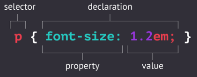

Een CSS regel bestaat uit een selector en een declaratie block:

CSS rule syntax
-
selector, verwijst naar de element dat je wenst te stylen (p) in deze voorbeeld
-
declaration block, tussen de { } kun je 1 of meerder declarations meegeven en elke declaration houdt je
gescheiden met semicolon ;
declaration, bestaat uit een property en de waarde
- property, (font-size) de 'eigenschap' van het element
- value, (1.2em) de 'waarde' die je declareert